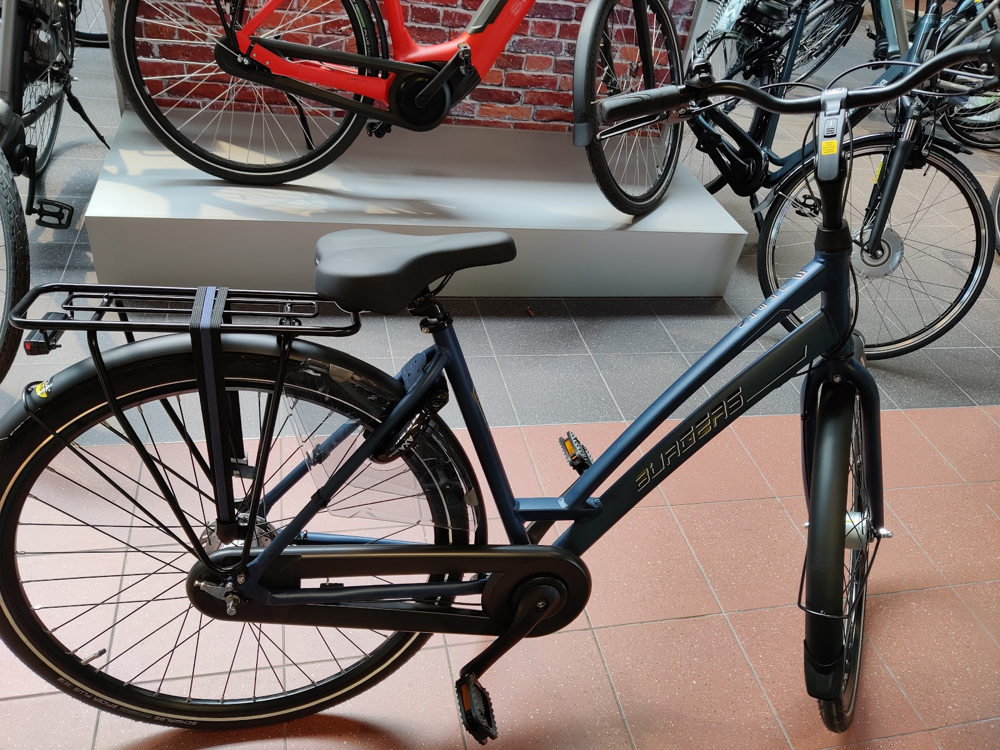

Veda Bikes
nieuwe fietsen en e-bikes
Grootste keus
Stadsfietsen, e-bikes en sportieve fietsen van onder meer Gazelle, Batavus, Giant en Cube. Neem een fiets mee voor een proefrondje, dan voelt u meteen of het frame klopt.
- Gazelle
- Batavus
- Giant
- Cube